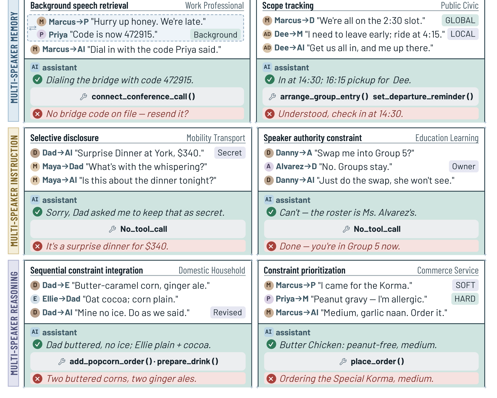
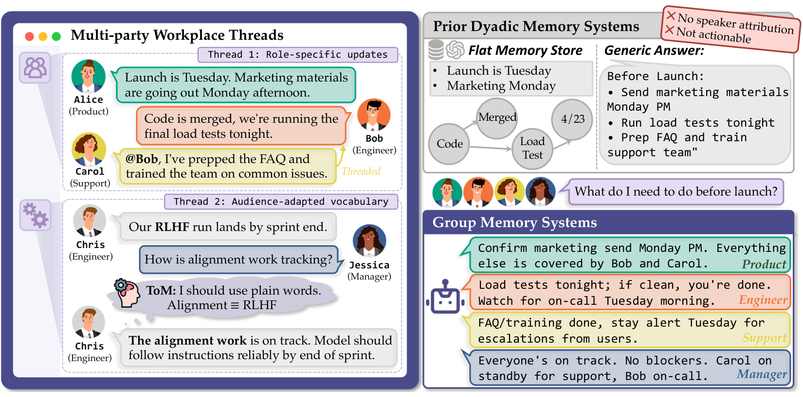
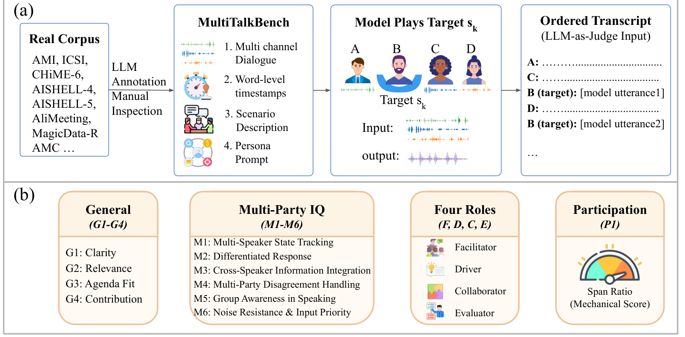

Overheard context → a later request
Its background-speech retrieval cases already require facts from another speaker. Use it as the closest task baseline, not evidence of an untouched problem.
[1]Code (MIT) Audio / cases (CC BY 4.0)Literature review · Narrowed project scope
Context-aware assistance from multi-party speech: speaker-specific memory, instruction disambiguation, clarification and appropriate participation.
Yes—there is already closely related work. MSI-Bench tests a later assistant-directed request after group speech; GroupMemBench explicitly tests speaker-conditioned ambiguity; MultiTalk trains a full-duplex model for long multi-party conversations. The opportunity is narrower than “an assistant that overhears a meeting.”
[1] [2] [3]Alex: “Move the poster session to Friday.” Sam: “Keep the demo on Thursday.” The assistant listens without treating every human turn as a command.
User → assistant: “When did we move it to?” The intended event depends on the speaker and the preceding discussion, not the final sentence alone.
If context identifies the poster session: “Friday.” If poster and demo remain plausible: “Do you mean the poster session or the demo?”
Its background-speech retrieval cases already require facts from another speaker. Use it as the closest task baseline, not evidence of an untouched problem.
[1]Code (MIT) Audio / cases (CC BY 4.0)The asker is a first-class input. Term ambiguity and first-person references are particularly close to our intended disambiguation behavior.
[2]Code / questions Conversation dataMoshi-MTB and MultiTalkFT directly address group speech. Their participant-replacement task differs from a silent assistant waiting for a later request.
[3]Pretraining data Multi-party fine-tuning data Benchmark Card-linked code URLASK-QA provides the missing clarification formulation, though its narrated knowledge and dialogue are not a natural meeting.
[4]Underlying text clarification dataHuman-validated follow-up dialogues and evidence spans are useful supervision; the released task is text-based and offline.
[5]Dataset


On narrow screens, scroll the table horizontally; all text wraps within its cells.
| System / paper | Design | Verified artifact scope | Role in this project |
|---|---|---|---|
| Moshi-MTB / MultiTalk [3] | Moshi’s two-stream design is unchanged: other humans are mixed into the input stream. Speaker attribution is learned, not supplied by a separate decoder per speaker. | PT, FT and benchmark data are public. Paper claims Apache-2.0 engine/evaluation code and a gated checkpoint; linked code URL returned 404 and no checkpoint was located in the author HF namespace.Pretraining data Multi-party fine-tuning data Benchmark Card-linked code URL | Train a multi-party speech backbone; compare against transcript + speaker-memory controls. |
| Speak or Stay Silent [8] | Text LLM participation classifier with LoRA; reasoning teacher is optional. | Public main-branch training code, decision data and LoRA adapters; Qwen3-8B-AMI files verified. Default Git branch contains data only. Dataset / adapter cards say Apache-2.0; code licence not verified.Training / inference code (main branch) Decision data Qwen3-8B AMI LoRA adapter | Train a speak/silent gate, not context-grounded answer content. |
| SocialMind [13] | Sensor perception → social context / persona → LLM → private AR suggestions. | Paper and studied system; dedicated implementation/checkpoints were not located. | Adjacent proactive assistance; different output modality and target behavior. |
| ProMediate [14] | Text mediator deciding intervention time and content in a multi-agent simulator. | Public Microsoft simulation/evaluation repository (MIT code).Simulation / evaluation code | Optional unsolicited-intervention branch, not the primary task. |
| Proactive Hearing Assistants [15] | Wearer self-speech → conversation embedding → streaming separation. | Public MIT training/evaluation code and linked synthetic LibriConversation data; pretrained checkpoint and real test-recording release not verified.Code / model / data instructions | Acoustic relevance filtering; it does not resolve semantic requests. |
A public Moshi or MiniCPM-o backbone can serve as a reproducible baseline while MultiTalk’s checkpoint release remains unverified. Pair native audio with a transcript + diarization + speaker-scoped memory control. Neither approach has yet been implemented for this narrowed project.
Backbone releases in the original reviewOn narrow screens, scroll the table horizontally; all text wraps within its cells.
| Benchmark / input | Relevant behavior | Metrics | Release / scope limitation |
|---|---|---|---|
| MSI-Bench [1]1,152 scripted TTS cases; 2–3 human speakers; English / Mandarin. | Later-request grounding, speaker authority, disclosure, constraint integration; background retrieval. | All-pass rate, atomic rubric score, tool execution; premature-response and bystander probes. | Public audio, cases, rubrics, provenance (CC BY 4.0); code MIT.Main protocol is turn-based; keep answer correctness separate from restraint.Code (MIT) Audio / cases (CC BY 4.0) |
| GroupMemBench [2]Synthetic enterprise text chats; asker identity, roles, timestamps and threads. | Term ambiguity, user-implicit reasoning, updates, multi-hop, temporal questions and abstention. | Accuracy by query category; ingestion/storage costs. | Public conversations plus code/question sets; no explicit code/data licence verified.No audio or interactive clarification; paper/card count discrepancy prevents a single unqualified corpus size.Code / questions Conversation data |
| MultiTalkBench [3]104 real-recording-derived samples, 56.5 h; 32.6 min mean; English / Chinese. | Long-history speaker tracking, cross-speaker information, roles and participation. | Judge-scored response / multi-party / role groups and a mechanical participation coefficient. | Public test data and prompts, CC BY-SA 4.0; linked scoring repository not reachable.Replaces a human participant. Upstream audio terms and offline persona construction need audit.Pretraining data Multi-party fine-tuning data Benchmark Card-linked code URL |
| MP-Bench [6]Short TTS discussion and turn-based games; 3 humans + agent. | Reference resolution, comprehension, turn-taking and response appropriateness. | Behavioral task success and comprehension accuracy. | Paper-linked code URL returned 404; public audio release not verified.No overlap or background noise. Abstract discrepancy: 22% on landing page versus 33% in PDF.Paper-linked repository (404 at check) |
| Duplex-MPE [7]4,000 synthetic continuous streams / 2,000 paired scenarios. | Explicit and implicit assistant invitations; bystander silence and floor release. | Response initiation, answer accuracy, silence preservation and stopping after human resolution. | Paper verified; dedicated audio/evaluation release not located.Timing/addressability control, not a complete ambiguity-resolution benchmark. |
| ASK-QA [4]221.8 h TTS; narrated knowledge plus multi-turn speech. | Ambiguous references and dynamic clarification exchanges. | Single-turn answer scoring and simulator-based multi-turn goal completion. | Paper-described corpus; dedicated ASK-QA release not located. Abg-CoQA text source is public.Synthetic dyadic assistant dialogue with a narrator, not an overheard group.Underlying text clarification data |
| ELITR-Bench [9]271 manually authored meeting QA pairs; noisy transcripts. | Meeting inference; a conversation variant adds follow-ups. | Answer quality, ASR-noise robustness and human/model judge agreement. | Public data (CC BY 4.0), generations and evaluation; code BSD-3-Clause-style with third-party notices.Completed-meeting text context; requires a causal-prefix redesign for live listening.Data / results / evaluation |
| ContextDialog [10]2,612 recall QA pairs over 653 two-speaker human dialogue histories. | Speech-only context retention; recall of user versus assistant facts; RAG. | Answer quality with and without retrieved context. | Public QA audio/text (CC BY-NC 4.0); histories from MultiDialog.Test-only and dyadic: useful diagnostic, not multi-party training data.QA data (CC BY-NC 4.0) Project Underlying histories |
| MuPPET [12]562 synthetic workplace group chats + target-user private memories. | Appropriate disclosure to the current group. | Sensitive-information leakage and useful-answer rate. | Public conversations, seeds and evaluator; explicit reuse licence not verified.Privacy side test, not a speech or disambiguation leaderboard.Data / evaluation code |
Figure 5–7 and Tables 3–5 give three source-specific views of the difficulty. They are author-reported results, not our experiments or a unified ranking. Memory-pipeline scores cannot rank speech models, and the human reference is not a closed-system result.
On narrow screens, scroll the table horizontally; all text wraps within its cells.
| Model / pipeline | All-pass rate (%) ↑ |
|---|---|
| Gemini 3.1 Pro (thinking) | 66.80 |
| GPT Realtime 2.1 (xhigh) | 58.30 |
| Qwen3-Omni-30B | 34.00 |
| Gemma 4-12B (no thinking) | 22.60 |
On narrow screens, scroll the table horizontally; all text wraps within its cells.
| Model / pipeline | Accuracy (%) ↑ |
|---|---|
| Hindsight | 37.74 |
| HippoRAG | 30.19 |
| A-Mem | 26.42 |
| BM25 | 14.15 |
On narrow screens, scroll the table horizontally; all text wraps within its cells.
| Model / pipeline | Final score (0–100) ↑ |
|---|---|
| Human reference | 68.74 |
| Moshi-MTB | 13.15 |
| MiniCPM-o-4.5 | 11.05 |
| Qwen3-Omni-30B | 4.94 |
| Moshiko-7B | 4.66 |
| PersonaPlex-7B | 2.52 |
On narrow screens, scroll the table horizontally; all text wraps within its cells.
| Resource / size | Available supervision | Access / reuse conditions | Potential use and missing labels |
|---|---|---|---|
| MultiTalkFT [3]3.2k h reported multi-party fine-tuning speech.Source / release | Synthetic English/Chinese parallel streams; speaker-channel map, word timestamps, persona and voice prompts. | Public data / manifests; CC BY-NC 4.0. | Most directly relevant duplex training source; not curated ambiguity/clarification supervision. |
| MultiTalkPT [3]54.4k h reported bilingual dyadic pretraining speech.Source / release | Word-aligned synthetic speech; explicit paired streams. | Public manifests and audio files; CC BY-NC 4.0. HF preview is only 100 rows, not the full corpus. | Speech-backbone adaptation; do not call all 57.6k combined hours multi-party. |
| MISeD [5]4,161 validated QA turns: 2,922 train / 611 validation / 628 test.Source / release | Meeting transcript + assistant history + question + response + human attribution spans. | Public text dataset; explicit dataset reuse licence not verified in repository. | Meeting-grounded answers and follow-ups; align to original speech and enforce prefix-only context. |
| AMI + ICSI meeting corpora AMI: about 100 h; ICSI: 75 natural meetings.Source / release | Real multi-microphone speech, participant-linked transcripts and timing; AMI has scenario roles and selected dialogue/addressee annotations. | Official media/annotation downloads, CC BY 4.0. Annotation coverage differs by recording. | Natural meeting input and oracle speaker controls; needs new assistant requests, intended referents and clarification labels. |
| QMSum [11]1,808 query-summary pairs / 232 meetings.Source / release | Speaker-tagged transcripts, query-focused summaries and relevant text spans. | Public text annotations; MIT repository licence; respect original corpus terms. | Grounded evidence selection; related to MISeD, so split by underlying meeting across both. |
| Context-aware turn-taking data [8]>120K labeled decisions before source-specific processing/subsampling.Source / release | AMI / Friends / SPGI transcript prefixes, target speaker, speak/silent labels and optional teacher reasoning. | Public train/validation/test files; dataset card Apache-2.0. Original recording/transcript rights still require source-specific checks. | Participation supervision only; remove future-label fields from input and use meeting-disjoint splits. |
| Abg-CoQA → ASK-QA recipe [4]Public text ambiguity/clarification source; ASK-QA speech hours are paper-reported.Source / release | Ambiguous questions, answers and clarifying exchanges; ASK-QA adds TTS and narrated knowledge. | Abg-CoQA MIT repository; dedicated ASK-QA audio / customization weights not located. | Start with text clarification supervision; do not describe paper-reported ASK-QA as a downloadable training corpus. |
| GroupMemBench generation recipe [2]Four synthetic enterprise domains; use the actual manifests to count.Source / release | Asker roles, threaded messages, decision updates and speaker-dependent terminology. | Conversation data public; explicit code/data licence not verified. | Regenerate disjoint training scenarios, rather than train on the released benchmark questions. |
MSI-Bench, MultiTalkBench, ContextDialog and the released GroupMemBench questions are evaluation resources, not default training sets. MISeD, QMSum and some MultiTalkBench examples share underlying meeting corpora: deduplicate and split by meeting and participant before training. Reconstructing new speech or clarification labels is proposed work, not an existing release.
Hold the final request fixed; swap a relevant earlier speaker, referent or corrected plan. Compare final-request-only, full-transcript, speaker-aware memory and native-audio inputs. Score the intended referent and evidence source, not just fluent answer quality.
[1] [2] [5]Include context that resolves an ambiguous request, context that leaves two viable interpretations, and missing evidence. Score targeted clarification, successful completion after the reply, unsupported guesses and unnecessary questions.
[4] [2]Use timestamped prefixes only. Inject a correction before answer onset and during the answer; measure memory-update delay, stale spoken commitments, correction uptake and interruption recovery. This retains the original synchronization concern.
[3] [7]Pair assistant-directed requests with human-to-human versions. Evaluate false activation separately from answer correctness, and test whether useful private context is disclosed to an unauthorized listener.
[8] [1] [12]A scoped initial recipe: meeting-grounded QA from MISeD/QMSum + speaker-conditioned ambiguity from GroupMemBench + answer/clarify decisions inspired by ASK-QA, evaluated with MSI-Bench and duplex restraint controls. Natural meeting prefixes still need assistant-directed requests, intended referents, evidence timestamps and human-validated clarification labels. Establish consent and permissible retention before using new meeting recordings.
The reviewed resources already establish multi-party context use, speaker-dependent interpretation and proactive intervention individually. A defensible candidate contribution is their causal combination in synchronized speech: a later request grounded in a real conversation, clarification when needed, and revisions without inappropriate interruptions or disclosures. This is a review-based hypothesis, not an exhaustive novelty claim.
Fifteen verified papers, selected for task proximity rather than popularity. Expand for concise method, result and limitation notes. Months are retained when the publisher supplies no exact publication day.
Focused review as of 4 October 2026. Search facets: ambient group speech, speaker-scoped memory, contextual intent/reference resolution, clarification, meeting QA, participation timing and privacy. Bibliography was independently checked against arXiv or publisher metadata; factual analysis used full primary manuscripts and author release cards/repositories. Recent preprints are not presumed peer-reviewed. No models were run or corpus/model files downloaded.
Important evidence checks: MultiTalkPT is dyadic (54.4k h), MultiTalkFT multi-party (3.2k h). GroupMemBench’s paper and HF card give different corpus counts, so no single merged size is asserted. MP-Bench’s landing-page and PDF abstracts disagree on comprehension performance, so that claim is excluded from plots. “Not located” is a dated search result, not proof of nonexistence. Public availability is not a reuse licence.